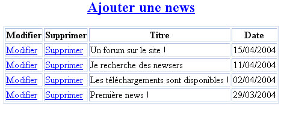
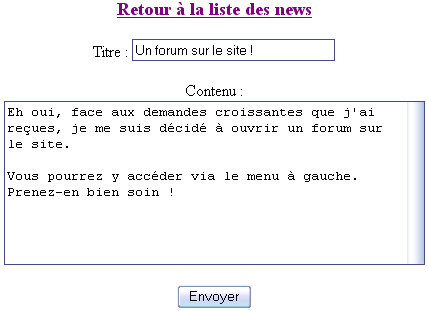
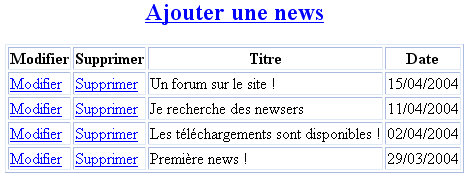

Étape 1 : prérequis
Que faut-il savoir faire pour réaliser un script de news ?
En fait, si vous avez suivi tous les chapitres du cours jusqu'ici, vous savez déjà tout ce qu'il faut. Mais pour que vous soyez bien sûrs d'avoir le niveau, je vais quand même vous lister ce que vous avez besoin de savoir :
travailler avec une base de données (ça, c'est pratiquement indispensable tout le temps, maintenant !) ;
travailler avec des formulaires (revoyez le chapitre correspondant au besoin) ;
travailler avec les dates et les timestamp.
Et puis, ma foi, c'est tout. :D
Vous allez le voir, en combinant les bases de données et les formulaires, on peut réaliser la plupart des scripts les plus courants !
Étape 2 : préparation du script
Il faut maintenant s'interroger sur le fonctionnement du script de news. Tout d'abord, une question un peu « nouvelle » : combien de pages PHP va-t-on devoir créer ?
Jusqu'ici, on a fait tenir nos scripts sur une seule page. Ici, on aurait aussi pu le faire, mais la page serait devenue trop grosse et ça aurait compliqué les choses pour rien.
On va donc « séparer » notre script en plusieurs pages pour que notre travail soit plus clair.
On va distinguer deux parties pour le script de news.
L'affichage des news : ce script affichera par exemple les cinq dernières news sur votre page d'accueil. C'est un script très simple à réaliser (une requête dans la base de données, et c'est bon). En général, l'affichage des news se fait dans le fichier d'accueil de votre site (index.php).
L'administration : elle comprend deux pages PHP depuis lesquelles on peut ajouter, modifier, supprimer des news. Ces pages doivent être protégées par .htaccess (cf. Annexes) pour éviter que n'importe qui puisse s'amuser à écrire des news. Les deux pages que l'on va créer sont les suivantes.
- 
liste_news.php : cette page liste toutes les news enregistrées dans la base de données, et vous propose pour chacune d'elles de la modifier ou de la supprimer. Il doit aussi y avoir un lien en gros pour « Ajouter une news » qui amène vers la page rediger_news.php.
Voici un aperçu de cette page : - 
rediger_news.php : cette page est en fait un petit formulaire dans lequel on va rédiger les news. On aura juste besoin d'écrire le titre d'une part, et le texte de la news d'autre part.
Voici un aperçu de cette page :
- 
Si l'on fait un petit schéma pour l'organisation des fichiers, cela donne quelque chose comme ceci :

Comme vous pouvez le voir, il y aurait quatre fichiers dans le dossier « admin » : le .htaccess et le .htpasswd pour la protection par mot de passe (ça, c'est expliqué dans l'annexe sur les .htaccess), et les deux fichiers d'administration : liste_news.php et rediger_news.php.
Enfin, le fichier index.php est le fichier d'accueil de votre site et contient les quelques lignes de code pour l'affichage des dernières news à vos visiteurs.
Maintenant, voyons la structure de la table. Je vous propose de créer une table appelée « news » qui contiendra les champs suivants :
On a besoin comme d'habitude d'un champ « id » en auto-increment, mais aussi des champs pour le « titre » et le « contenu » de la news.
Enfin, on a un champ « timestamp » qui nous permettra de stocker le timestamp du moment où la news a été postée. Comme on l'a vu dans le chapitre sur les dates, on pourra ressortir toutes les informations qu'on veut à partir de ce timestamp (le jour, l'heure…).
En ce qui concerne les liens, voici quelques petites choses à savoir.
Le lien « Ajouter une news » sur la page liste_news.php est un lien HTML normal qui amène vers rediger_news.php.
Sur la page liste_news.php, si l'on clique sur « Modifier » pour une news, ça amène vers la page rediger_news, mais cette fois avec un paramètre qui indique l'id de la news à modifier. Par exemple, pour la news no 3, le lien serait : rediger_news.php?modifier_news=3.
Sur la page liste_news.php toujours, si l'on clique sur « Supprimer » pour une news, ça recharge la page liste_news avec un paramètre qui indiquera qu'il faut supprimer une news. Par exemple, le lien pour la news dont le numéro d'id est 3 sera : liste_news.php?supprimer_news=3.
Lorsque l'on validera le formulaire de rediger_news.php, le mieux est de retourner sur la page liste_news.php. La balise du formulaire sera donc : <form action="liste_news.php" method="post">.
Dans liste_news.php, on vérifiera si les variables $_POST['titre'] et $_POST['contenu'] existent : ça voudra dire alors qu'il faut enregistrer des informations dans la base de données.
Ainsi, quand on traitera les informations dans liste_news.php, on pourra vérifier si c'est une nouvelle news ou non.
Le champ caché a pour valeur 0 : c'est une nouvelle news. On fait donc un INSERT INTO.
Le champ caché a une autre valeur que 0 : c'est que l'on est en train de modifier une news. Dans ce cas, on fait un UPDATE de la news correspondante.
Voilà, on a tout vu… sauf trois petites fonctions qu'il va falloir penser à utiliser : nl2br, addslashes et stripslashes.
nl2br : comme on l'a vue, elle sert à vous épargner de taper les retours à la ligne en HTML. Faites un nl2br juste avant l'affichage des news pour convertir les « Entrées » en balises <br />.
addslashes : en fait, il n'est pas toujours obligatoire d'utiliser cette fonction selon votre hébergeur. Mais il vaut mieux prendre la bonne habitude de l'utiliser. Donc, AVANT d'enregistrer le titre et le contenu de la news, vous leur appliquez un addslashes qui va rajouter des \, ce qui vous épargnera d'avoir des « bugs » (MySQL n'aime pas trop les apostrophes, en particulier).
stripslashes : cette fonction fait l'inverse. Utilisez-la juste avant l'affichage du titre et du contenu de la news pour éviter que l'on voie les antislashs.
Vous aurez notamment besoin de ces fonctions dans la page qui affiche les news à vos visiteurs (index.php).
Gardez toujours à l'esprit quand vous rédigez une news que vous pouvez taper du code HTML. On ne fera pas de htmlspecialchars ni de mysql_real_escape_string cette fois, car vous serez le seul à rédiger des news (vous n'allez pas hacker votre propre site, quand même ? o_O ).
Étape 3 : à vous de jouer !
Allez, au boulot !
Le script n'est pas spécialement compliqué. Il aurait pu l'être beaucoup plus, mais j'ai préféré garder uniquement les fonctions « vitales » : ajouter, modifier et supprimer une news.
Vu qu'il y a plusieurs pages, je vous conseille de bien vous organiser et SURTOUT de réfléchir un peu à votre script avant de commencer à coder comme des barbares. :pirate:
Ça vous évitera de vous emmêler les pinceaux, et votre code n'en sera que plus clair. :)
Ah, et j'allais oublier un détail : quand vous modifiez une news, ne mettez pas à jour le timestamp. On garde la date de création de la news.
Étape 4 : correction
… Voilà maintenant trois jours et trois nuits que vous codez sans relâche, sans manger ni boire ni dormir… :diable:
Tout ça par ma faute. :p
Allez les amis, l'heure de la délivrance a sonné !
Il est temps maintenant de regarder la correction.
Si vous vous en êtes sortis, bravo !
Sinon, eh bah prenez-en de la graine et dites-vous que vous pourrez toujours vous rattraper au prochain TP. ^^
Bon, on a trois pages à corriger. On commence par la plus simple de toutes : index.php, c'est la page d'accueil de votre site où l'on affiche les news.
<!DOCTYPE html PUBLIC "-//W3C//DTD XHTML 1.0 Strict//EN" "http://www.w3.org/TR/xhtml1/DTD/xhtml1-strict.dtd">
<html xmlns="http://www.w3.org/1999/xhtml" xml:lang="fr" >
<head>
<title>Bienvenue sur mon site</title>
<meta http-equiv="Content-Type" content="text/html; charset=iso-8859-1" />
<style type="text/css">
h1, h3
{
text-align:center;
}
h3
{
background-color:black;
color:white;
font-size:0.9em;
margin-bottom:0px;
}
.news p
{
background-color:#CCCCCC;
margin-top:0px;
}
.news
{
width:70%;
margin:auto;
}
</style>
</head>
<body>
<h1>Bienvenue sur mon site !</h1>
<p>Voici les dernières news :</p>
<?php
mysql_connect("localhost", "sdz", "mot_de_passe");
mysql_select_db("coursphp");
// On récupère les cinq dernières news.
$retour = mysql_query('SELECT * FROM news ORDER BY id DESC LIMIT 0, 5');
while ($donnees = mysql_fetch_array($retour))
{
?>
<div class="news">
<h3>
<?php echo $donnees['titre']; ?>
<em>le <?php echo date('d/m/Y à H\hi', $donnees['timestamp']); ?></em>
</h3>
<p>
<?php
// On enlève les éventuels antislashs, PUIS on crée les entrées en HTML (<br />).
$contenu = nl2br(stripslashes($donnees['contenu']));
echo $contenu;
?>
</p>
</div>
<?php
} // Fin de la boucle des <italique>news</italique>.
?>
</body>
</html>Il n'y a rien de très surprenant : la requête est simple, vous avez déjà vu pire. ;)
On fait une boucle pour afficher les cinq dernières news.
J'ai calculé la date à partir du timestamp : j'ai extrait la date et l'heure. Il y a quelques caractères comme le « à » que j'ai écrit dans la fonction date (j'ai mis un antislash \ devant pour qu'il fonctionne).
Enfin, j'ai fait des stripslashes pour enlever les antislashs du titre et du contenu.
Sur une ligne, vous pouvez même repérer que j'ai « combiné » la fonction stripslashes avec nl2br : on a tout à fait le droit. ^^
Passons maintenant aux deux pages d'administration.
On commence par liste_news.php. Notez que j'ai volontairement désactivé l'ajout et la suppression de news pour éviter que vous vous amusiez à tout modifier. :p
<!DOCTYPE html PUBLIC "-//W3C//DTD XHTML 1.0 Strict//EN" "http://www.w3.org/TR/xhtml1/DTD/xhtml1-strict.dtd">
<html xmlns="http://www.w3.org/1999/xhtml" xml:lang="fr" >
<head>
<title>Liste des news</title>
<meta http-equiv="Content-Type" content="text/html; charset=iso-8859-1" />
<style type="text/css">
h2, th, td
{
text-align:center;
}
table
{
border-collapse:collapse;
border:2px solid black;
margin:auto;
}
th, td
{
border:1px solid black;
}
</style>
</head>
<body>
<h2><a href="rediger_news.php">Ajouter une news</a></h2>
<?php
mysql_connect("localhost", "sdz", "mot_de_passe");
mysql_select_db("coursphp");
//-----------------------------------------------------
// Vérification 1 : est-ce qu'on veut poster une news ?
//-----------------------------------------------------
if (isset($_POST['titre']) AND isset($_POST['contenu']))
{
$titre = addslashes($_POST['titre']);
$contenu = addslashes($_POST['contenu']);
// On vérifie si c'est une modification de news ou non.
if ($_POST['id_news'] == 0)
{
// Ce n'est pas une modification, on crée une nouvelle entrée dans la table.
mysql_query("INSERT INTO news VALUES('', '" . $titre . "', '" . $contenu . "', '" . time() . "')");
}
else
{
// On protège la variable "id_news" pour éviter une faille SQL.
$_POST['id_news'] = addslashes($_POST['id_news']);
// C'est une modification, on met juste à jour le titre et le contenu.
mysql_query("UPDATE news SET titre='" . $titre . "', contenu='" . $contenu . "' WHERE id='" . $_POST['id_news'] . "'");
}
}
//--------------------------------------------------------
// Vérification 2 : est-ce qu'on veut supprimer une news ?
//--------------------------------------------------------
if (isset($_GET['supprimer_news'])) // Si l'on demande de supprimer une news.
{
// Alors on supprime la news correspondante.
// On protège la variable « id_news » pour éviter une faille SQL.
$_GET['supprimer_news'] = addslashes($_GET['supprimer_news']);
mysql_query('DELETE FROM news WHERE id=\'' . $_GET['supprimer_news'] . '\'');
}
?>
<table><tr>
<th>Modifier</th>
<th>Supprimer</th>
<th>Titre</th>
<th>Date</th>
</tr>
<?php
$retour = mysql_query('SELECT * FROM news ORDER BY id DESC');
while ($donnees = mysql_fetch_array($retour)) // On fait une boucle pour lister les news.
{
?>
<tr>
<td><?php echo '<a href="rediger_news.php?modifier_news=' . $donnees['id'] . '">'; ?>Modifier</a></td>
<td><?php echo '<a href="liste_news.php?supprimer_news=' . $donnees['id'] . '">'; ?>Supprimer</a></td>
<td><?php echo stripslashes($donnees['titre']); ?></td>
<td><?php echo date('d/m/Y', $donnees['timestamp']); ?></td>
</tr>
<?php
} // Fin de la boucle qui liste les news.
?>
</table>
</body>
</html>Avant d'afficher le tableau, on fait deux vérifications.
Vérification 1 : on vérifie si l'on veut poster une news. Si la page rediger_news.php nous a envoyé des informations, c'est qu'on doit poster une news. On applique d'abord un addslashes au titre et au contenu pour éviter les bugs comme je vous l'ai dit. Puis, on vérifie la valeur de id_news :
si elle vaut 0, c'est que c'est une nouvelle news, donc on fait un INSERT INTO ;
si elle vaut autre chose que 0, alors on modifie juste la news correspondant à cet id.
Vérification 2 : on vérifie si l'on n'a pas cliqué sur un lien « Supprimer ». Si c'est le cas, alors on supprime la news correspondante.
Après, c'est une simple boucle pour lister tous les titres des news dans un tableau.
Allez, on passe au dernier fichier : rediger_news.php.
<!DOCTYPE html PUBLIC "-//W3C//DTD XHTML 1.0 Strict//EN" "http://www.w3.org/TR/xhtml1/DTD/xhtml1-strict.dtd">
<html xmlns="http://www.w3.org/1999/xhtml" xml:lang="fr" >
<head>
<title>Rédiger une news</title>
<meta http-equiv="Content-Type" content="text/html; charset=iso-8859-1" />
<style type="text/css">
h3, form
{
text-align:center;
}
</style>
</head>
<body>
<h3><a href="liste_news.php">Retour à la liste des news</a></h3>
<?php
mysql_connect("localhost", "sdz", "mot_de_passe");
mysql_select_db("coursphp");
if (isset($_GET['modifier_news'])) // Si on demande de modifier une news.
{
// On protège la variable « modifier_news » pour éviter une faille SQL.
$_GET['modifier_news'] = mysql_real_escape_string(htmlspecialchars($_GET['modifier_news']));
// On récupère les informations de la news correspondante.
$retour = mysql_query('SELECT * FROM news WHERE id=\'' . $_GET['modifier_news'] . '\'');
$donnees = mysql_fetch_array($retour);
// On place le titre et le contenu dans des variables simples.
$titre = stripslashes($donnees['titre']);
$contenu = stripslashes($donnees['contenu']);
$id_news = $donnees['id']; // Cette variable va servir pour se souvenir que c'est une modification.
}
else // C'est qu'on rédige une nouvelle news.
{
// Les variables $titre et $contenu sont vides, puisque c'est une nouvelle news.
$titre = '';
$contenu = '';
$id_news = 0; // La variable vaut 0, donc on se souviendra que ce n'est pas une modification.
}
?>
<form action="liste_news.php" method="post">
<p>Titre : <input type="text" size="30" name="titre" value="<?php echo $titre; ?>" /></p>
<p>
Contenu :<br />
<textarea name="contenu" cols="50" rows="10">
<?php echo $contenu; ?>
</textarea><br />
<input type="hidden" name="id_news" value="<?php echo $id_news; ?>" />
<input type="submit" value="Envoyer" />
</p>
</form>
</body>
</html>Là, on vérifie d'abord si l'on doit modifier une news ou en écrire une nouvelle.
On prépare des variables : comme ça, les champs seront vides si c'est une nouvelle news, ou remplis avec le texte de l'ancienne news si c'est une modification.
Notez que le champ caché appelé « id_news » est très important. C'est lui qui nous permettra de savoir dans liste_news.php si l'on a affaire à un ajout ou à une modification de news.
Étape 5 : améliorez ce script !
Une fois n'est pas coutume, je vais vous dire que mon script est en fait le minimum et qu'on pourrait trouver des tonnes de façons de l'améliorer !
Voici quelques pistes pour que vous continuiez à vous creuser encore un peu les méninges.
Le design, comme d'habitude, est minimaliste. Il vous sera très facile de changer le design, vu que ça requiert une simple modification du code HTML.
Vous pourriez rajouter un champ dans la table « news » qui s'appellerait « timestamp_modification ». Ce champ contiendrait le timestamp de la dernière modification.
Rajoutez aussi un champ « pseudo » qui contiendrait le pseudo de la personne qui a posté la news. Il vous faudra rajouter un champ dans le formulaire (à côté du titre, par exemple) pour que l'on puisse indiquer son pseudo.
Il serait bien aussi que vos visiteurs puissent proposer des news. Créez une nouvelle page, « proposer_news.php », par exemple, accessible par tout le monde (pas de protection par .htaccess vu que tous vos visiteurs doivent pouvoir proposer des news).
Les news proposées seraient automatiquement inscrites dans la tables « news », mais non validées (pour qu'elles ne s'affichent que si vous avez donné votre accord ;) ). Pour gérer la validation des news, vous pouvez ajouter (encore) un nouveau champ dans la table appelé « valide » :s'il vaut 1, la news est validée, elle est affichée ;
s'il vaut 0, la news n'est pas encore validée, elle n'est donc pas affichée dans index.php.
Il faudrait aussi prévoir un système de pagination, comme on l'a fait pour le livre d'or. En effet, lorsque vous aurez 200 news, ça va être un peu lourd à charger sur votre page d'admin. Par ailleurs, si vous réalisez un système de pagination pour liste_news.php, vous pourriez aussi en faire un dans une page « archives.php » accessible par tous vos visiteurs où les anciennes news seraient lisibles. :)
Une autre chose qui serait intéressante : réaliser des commentaires de news. Pour cela, vous aurez besoin de créer une nouvelle table « commentaires », dans laquelle il y aurait deux id :
un premier « id » normal, correspondant à l'id du commentaire (en auto_increment) ;
un second champ, « id_news » qui contient le numéro d'id de la news à laquelle correspond le commentaire.
Ainsi, pour obtenir tous les commentaires de la news no 3, vous feriez la requête SQL :
SELECT * FROM commentaires WHERE id_news=3
… et vous obtiendriez uniquement les commentaires de la news no 3. :D
Voilà voilà, ce ne sont que des suggestions, mais si vous voulez vous améliorer, je vous recommande fortement d'essayer d'en faire quelques-unes. ;)
N'oubliez pas que le forum est à votre disposition si vous avez un problème ! :)
Et voilà, le TP news touche à sa fin. N'hésitez pas à y passer un peu de temps, car c'est vraiment un script PHP incontournable !
Par ailleurs, comme vous pouvez le voir, il y a des tonnes de façons d'améliorer le script.
Bien entendu, ne commencez à améliorer le script uniquement lorsque vous avez parfaitement compris mon code source de correction.
Je sais qu'il n'est pas facile à première vue de se « plonger » dans le code source de quelqu'un d'autre, mais vous devez faire ce petit effort. C'est dans ce genre de TP que vous en apprenez le plus sur PHP. :)
Au fait, ma correction n'est qu'une possibilité parmi d'autres. Si vous avez trouvé un autre moyen de faire qui ne ressemble pas au mien, gardez-le. Chacun code à sa manière, je ne voudrais pas non plus vous imposer ma façon de coder. :p